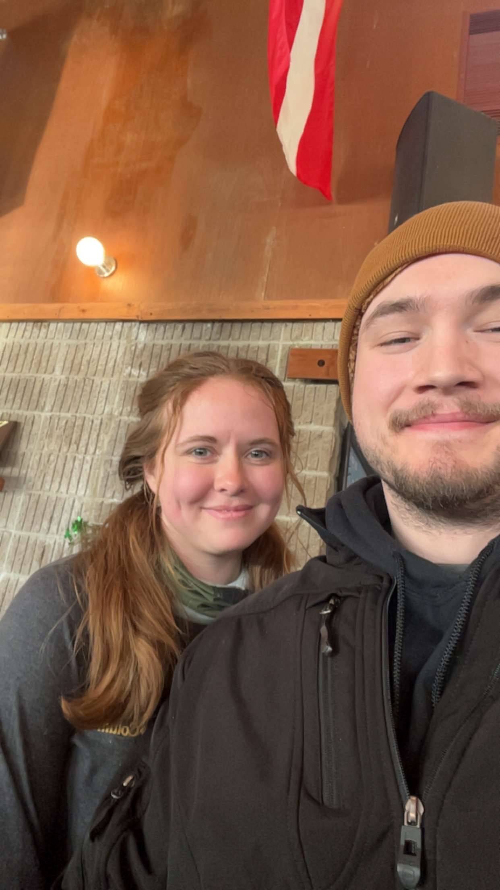
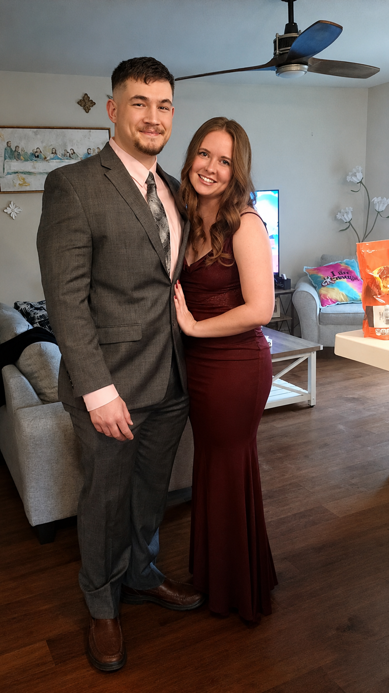

Add your photo
Add your photoWHERE IT ALL BEGAN
From Piedmont, South Dakota
Before our paths crossed, my story began near the Black Hills of South Dakota.
OUR FAVORITE SECRET
A love like this only comes once in a lifetime, and we didn't want to wait any longer.
Some love stories take years to unfold. Ours simply fell into place. From the very beginning, loving each other felt effortless, like finding a piece of ourselves we never knew was missing. In a short time, we've found a lifetime of love, laughter, understanding, and a kind of happiness neither of us knew was possible. So this Christmas, we chose forever. Just the two of us, a little Christmas magic, and the beginning of our favorite chapter yet. we're married.
With all our love, Kaeli & Skylar
THE ROAD THAT BROUGHT US HERE
Two different places. Two separate lives. So many chances to cross paths — and one night that changed everything.
Add your photoBefore our paths crossed, my story began near the Black Hills of South Dakota.
Started: 2019 · Degree: Computer Science · Graduated: May 4th, 2024
Started: June 10, 2024 · Role: Cyber Security Engineer · Cedar Rapids, Iowa
 Add your photo
Add your photoSkylar’s story started in Westcliffe, long before either of us knew what was ahead.
Started: 2018 · Degree: Electrical Engineer with a minor in Avionics and Systems · Graduated: May 4th, 2024
 Add your photo
Add your photoStarted: [date] · Role: RF Hardware Engineer · Cedar Rapids, Iowa
SO CLOSE, YET SO FAR
We attended South Dakota Mines at the same time, shared [number] classes, and even graduated on the very same day — without ever meeting.
And somehow, our next chapter led us to the same company, too.
Neither of us was much for going out. But on one ordinary night, we both decided to go to the same bar. After years of near misses, one unexpected evening changed everything.
And just like that, there was us. ♡
WHERE IT ALL BEGAN
For a whole year, we were friends, and being around each other always felt easy. There was no pressure or need to be anything other than ourselves. We built a friendship full of laughter, conversations, and little moments that would eventually mean so much more.

WHEN FRIENDSHIP BECAME MORE
April 4th, 2026
After a year of friendship, we finally took a chance on something more. What felt so natural as friends began to feel different in the best way. We already knew how easy it was to be together; now, we got to discover what it meant to fall in love.
OUR FIRST DATE
A fancy dinner at Cobble Hill, matching pasta dishes, blue orchids, sore feet, and slow dancing afterward. It was the kind of night we never wanted to end.
SOMEWHERE ALONG THE WAY
Somewhere between the adventures, the quiet evenings, the hard days, and the completely ordinary moments, forever stopped feeling like an idea and started feeling like us.
DECEMBER 2026
So this Christmas, we made it official. Quietly, happily, and completely in love, we began our forever together.
And now our next adventure begins.
SOME OF OUR FAVORITE MOMENTS
The big moments, the little moments, and everything in between.
FOR OUR NEXT CHAPTER
Your love and well wishes are more than enough. For those who have asked, or would like to celebrate with a gift, we've put together a few things for our new life together.
OUR BIGGEST ADVENTURE YET
We're saving toward a place to call our own. If you'd like to contribute toward our future home, we'd be incredibly grateful.
href="house-fund.html" class="button button-green" > Contribute to Our HomeFOR MARRIED LIFE
We've gathered a few things we would love to have as we build our home and begin married life together.
href="registry.html" class="button button-burgundy" > View Our RegistryMERRY CHRISTMAS FROM
Kaeli & Skylar